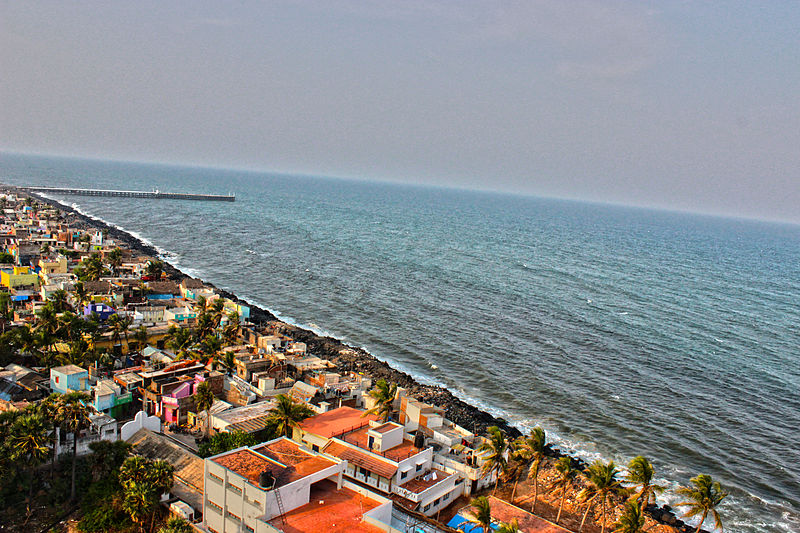
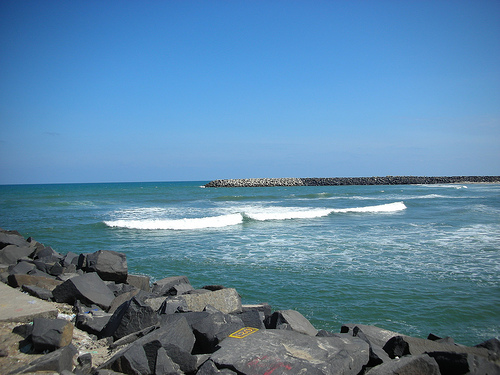
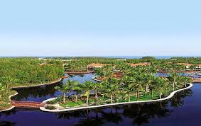
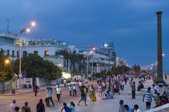
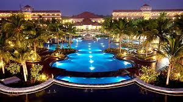

Puducherry
Puducherry (/pʊdʊˈtʃɛri/, literally New Town in Tamil),[7] formerly known as Pondicherry (/pɒndɪˈtʃɛri/; French: Pondichéry), is a union territory in India. It was formed out of four exclaves of former French India, namely Pondichéry (Pondicherry; now Puducherry), Karikal (Karaikal), Mahé and Yanam (Yanam). It is named after the largest district, Puducherry. Historically known as Pondicherry(Pāṇṭiccēri), the territory changed its official name to Puducherry (Putuccēri) on 20 September 2006.[8]
Puducherry lies in the southern part of the Indian Peninsula. The areas of Puducherry district and Karaikal district are bound by the state of Tamil Nadu, while Yanam district and Mahé district are enclosed by the states of Andhra Pradesh and Kerala respectively. Puducherry is the 29th most populous and the third most densely populated of the states and union territories of India. It has a gross domestic product (GDP) of ₹0.21 lakh crore (US$2.9 billion) and ranks 25th in India

History
In 1674, Pondicherry (Pondichéry) became a French colony of the French colonial empire. Together with Chandernagor (already French since 1673), Mahé (since 1721), Yanam (Yanaon) (since 1731), Karaikal (Karikal) (since 1739) and Masulipatam (1760), it formed the French colony of French India, under a single French governor in Pondicherry, although French rule over one or more of these enclaves was repeatedly interrupted by British occupations. The territories of French India were completely transferred to the Republic of India de facto on 1 November 1954, and de jure on 16 August 1962, when French India ceased to exist, becoming the present Indian constituent union territory of Pondicherry, still combining four coastal enclaves.November 2013.

Geography
The union territory of Puducherry consists of four small unconnected districts: Puducherry district (293 km2 (113 sq mi)), Karaikal district (161 km2 (62 sq mi)) and Yanam district (20 km2 (7.7 sq mi)) on the Bay of Bengal and Mahé district (9 km2 (3.5 sq mi)) on the Arabian Sea, covering a total area of 483 km2 (186 sq mi). Puducherry and Karaikal have the largest areas and population, and are both enclaves of Tamil Nadu. Yanam and Mahé are enclaves of Andhra Pradesh and Kerala, respectively. Its population, as per the 2011 Census, is 1,244,464.
Some of Puducherry's regions are themselves amalgamations of non-contiguous enclaves, often called pockets in India. The Puducherry region is made of 11 such pockets, some of which are very small and entirely surrounded by the territory of Tamil Nadu. Mahé region is made up of three pockets. This unusual geography is a legacy of the colonial period with Puducherry retaining the borders of former French India.
All four regions of Puducherry are located in the coastal region. Five rivers in Puducherry district, seven in Karaikal district, two in Mahé district and one in Yanam district drain into the sea, but none originates within the territory.

Tourism
Puducherry is one of the most popular tourist spots for national and international tourists. Out of 274 Paadal Petra Sthalam Shiva Temples, the Puducherry region is owning 1 temple and in Karaikal regions it is having 4 temples which itself a clear proof that the Puducherry territory is also a part of the spiritual and sacramental of Shaivism principles. Besides in Villianur, Bahour and in so many areas of Puducherry region there are so many Shiva temples built up during the golden period of King Chola empire which gives immense pleasure to be proud of that our Puducherry territory was administered under the control of such golden rulers. So visiting such ancient temples would definitely give more spiritual vibrations to the tourists. For every year the Puducherry territory administration also declares official Holiday for performing the grand Car Festivals to the temples situates in Villianur, Veerampattinam that too the Lieutenant Governor of Puducherry and the Chief Minister of Puducherry also participates in such grand Car Festival. Besides in Kizhoor, Puducherry which is 22 km away from Puducherry therein on 18-10-1954 a referendum was conducted to ensure that whether the erstwhile French establishments of Puducherry shall continue with French administration or to merge with Indian Union and finally decided to merge with Indian Union. Puducherry was the residence of Sri Aurobindo (1872–1950) and the Sri Aurobindo Ashram still operates from Puducherry. A unique experimental city Auroville, the brainchild of the Mother, whose inhabitants are drawn from all parts of the world is situated on the outskirts of the city. There are several temples, churches, monuments, parks and mosques which attract tourists

Administration
Puducherry is a Union Territory of India rather than a state, which implies that governance and administration falls directly under federal authority. However, Puducherry is one of only two union territories in India (the other being Delhi), that is entitled by a special constitutional amendment to have an elected legislative assembly and a cabinet of ministers, thereby conveying partial statehood.[13]
The Centre is represented by the Lieutenant Governor, who resides at the Raj Nivas (Le Palais du Gouverneur) at the Park, the former palace of the French governor. The central government is more directly involved in the territory's financial well-being unlike states, which have a central grant that they administer. Consequently, Puducherry has at various times, enjoyed lower taxes, especially in the indirect category.
